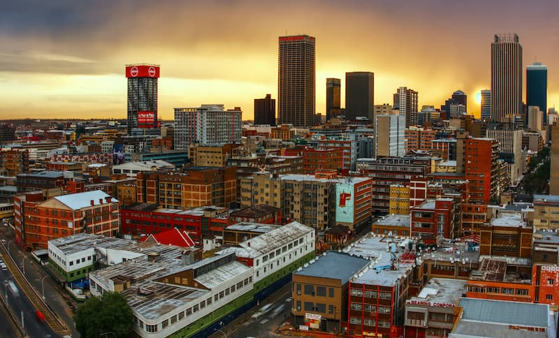

Tshedimoso Segona
My name is Tshedimoso Segona, i was born and raised in Soweto Johannesburg, South Africa. I have 2 siblings , an older sister and a younger brother, Itumeleng Segona and Kgomotso Segona. I am currently working as an administrator at The South African Learner Support Organisation (salso), and i am also a team leader of the volunteers at salso. I love to read , watch movies and listen to music. I love my family , i love my friends and i love God and Jesus Christ.
Johannesburg, South Africa

Johannesburg — fondly called Joburg, Jozi, or
Egoli (the City of Gold) —
is South Africa's largest
and most vibrant city. Founded in 1886 after a gold
discovery,
it's one of the few major cities not built
near a river or coast. Known for its energy and creativity,
Joburg blends history, culture, and modern life — from
Soweto and the Apartheid Museum to the trendy
Maboneng
Precinct. With over 10 million trees and 11 official languages
spoken, the city is a green,
diverse, and dynamic heart of
modern Africa.